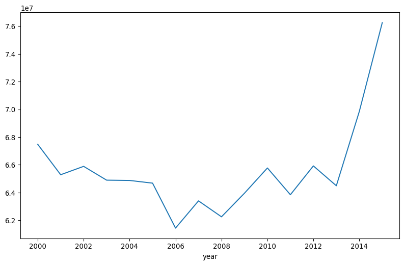

import pandas as pd
import numpy as np
# Load the dataset
url = "https://raw.githubusercontent.com/rfordatascience/tidytuesday/master/data/2019/2019-09-17/national_parks.csv"
parks_df = pd.read_csv(url)Quick Reference
Here’s a quick reference for the pandas DataFrame operations we’ll be using:
# Basic DataFrame operations
df.shape # Get number of rows and columns
df.columns # Get column names
df.dtypes # Get data types
df.isnull().sum() # Count missing values
# Filtering
df[df['column'] == value] # Filter by condition
df[(condition1) & (condition2)] # Multiple conditions
# Grouping and aggregation
df.groupby('column')['value'].sum() # Group and sum
df.groupby('column')['value'].mean() # Group and averageHere are our course cheatsheets:
Feel free to refer to these cheatsheets throughout the exercise if you need a quick reminder about syntax or functionality.
Exercise Overview
In this collaborative coding exercise, you’ll work with a partner to practice importing, cleaning, exploring, and analyzing DataFrames using pandas. You’ll be working with a dataset containing yearly visitor information about national parks in the United States.
Setup
First, let’s import the necessary libraries and load our dataset.
Task 1: Data Exploration and Cleaning
With your partner, explore the DataFrame and perform some initial cleaning.
1. How many rows and columns does the DataFrame have?
print(parks_df.shape)(21560, 12)2. What are the column names?
print(parks_df.columns)Index(['year', 'gnis_id', 'geometry', 'metadata', 'number_of_records',
'parkname', 'region', 'state', 'unit_code', 'unit_name', 'unit_type',
'visitors'],
dtype='object')3. What data types are used in each column?
print(parks_df.dtypes)year object
gnis_id object
geometry object
metadata object
number_of_records int64
parkname object
region object
state object
unit_code object
unit_name object
unit_type object
visitors float64
dtype: object4. Are there any missing values in the DataFrame?
print(parks_df.isnull().sum())year 0
gnis_id 0
geometry 0
metadata 2712
number_of_records 0
parkname 2218
region 0
state 0
unit_code 0
unit_name 0
unit_type 0
visitors 4
dtype: int645. Remove the rows where year is Total
# Remove 'Total' rows
parks_df = parks_df[parks_df['year'] != 'Total']
print(f"Removed rows where year is 'Total'")Removed rows where year is 'Total'6. Convert the year column to numeric type
# Convert to numeric
parks_df['year'] = pd.to_numeric(parks_df['year'])
print("Converted year column to numeric")Converted year column to numericTask 2: Basic Filtering and Analysis
Now, let’s practice some basic filtering and analysis operations:
1. Create a new DataFrame for years 2000-2015 and only National Parks
# Filter for years 2000-2015 and National Parks only
parks_2000_2015 = parks_df[
(parks_df['year'] >= 2000) &
(parks_df['year'] <= 2015) &
(parks_df['unit_type'] == 'National Park')
]
print(f"Created filtered DataFrame for years 2000-2015 with National Parks only")Created filtered DataFrame for years 2000-2015 with National Parks only2. Find the total number of visitors across all National Parks for each year
yearly_totals = parks_2000_2015.groupby('year')['visitors'].sum()
print(yearly_totals)year
2000 67481265.0
2001 65281408.0
2002 65886517.0
2003 64890428.0
2004 64869460.0
2005 64675197.0
2006 61431710.0
2007 63396381.0
2008 62246208.0
2009 63946873.0
2010 65769682.0
2011 63839238.0
2012 65919193.0
2013 64486815.0
2014 69847696.0
2015 76258329.0
Name: visitors, dtype: float643. Calculate the average yearly visitors for each National Park
avg_yearly_visitors = parks_2000_2015.groupby('parkname')['visitors'].mean()
print(avg_yearly_visitors.head(10))parkname
Arches 9.433541e+05
Badlands 9.171606e+05
Biscayne 5.086311e+05
Black Canyon of the Gunnison 1.804268e+05
Bryce Canyon 1.161639e+06
Canyonlands 4.358917e+05
Capitol Reef 6.241222e+05
Carlsbad Caverns 4.217702e+05
Channel Islands 3.900332e+05
Congaree 1.119453e+05
Name: visitors, dtype: float644. Identify the top 5 most visited National Parks
top_5_parks = parks_2000_2015.groupby('parkname')['visitors'].sum().nlargest(5)
print(top_5_parks)parkname
Grand Canyon 70836419.0
Yosemite 57440533.0
Yellowstone 50958648.0
Olympic 50201663.0
Rocky Mountain 49124036.0
Name: visitors, dtype: float64Task 3: Thinking in DataFrames
Let’s create a simple visualization:
# Simple plot of yearly visitor totals
yearly_totals.plot(figsize=(10, 6))
Conclusion and Discussion
With your partner, briefly discuss:
- Which pandas operations did you find most useful for this analysis?
- What other questions could you explore with this dataset?
- How would you handle the data differently if you wanted to analyze seasonal patterns?
Great job working through these exercises! You’ve practiced importing data, cleaning a dataset, exploring DataFrames, and performing various filtering and analysis operations using pandas. These skills are fundamental to data analysis in Python and will be valuable as you continue to work with more complex datasets.